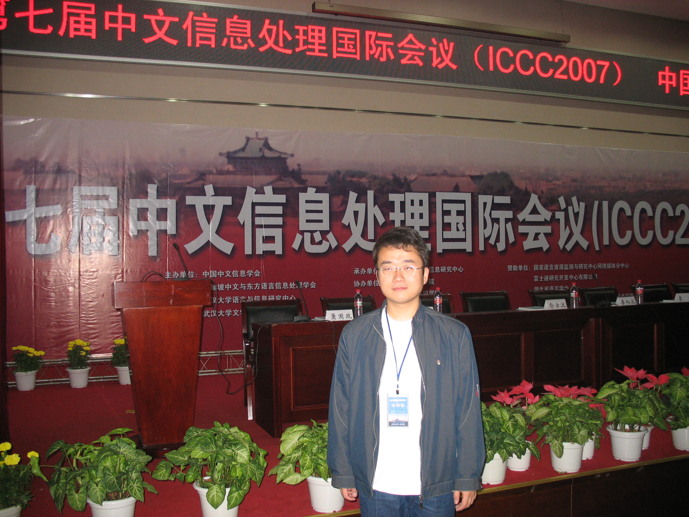
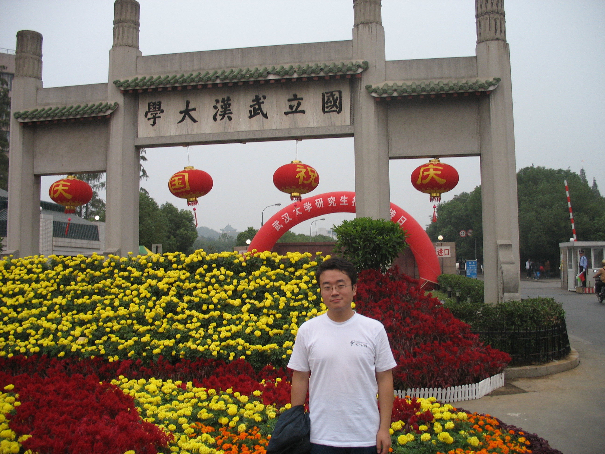
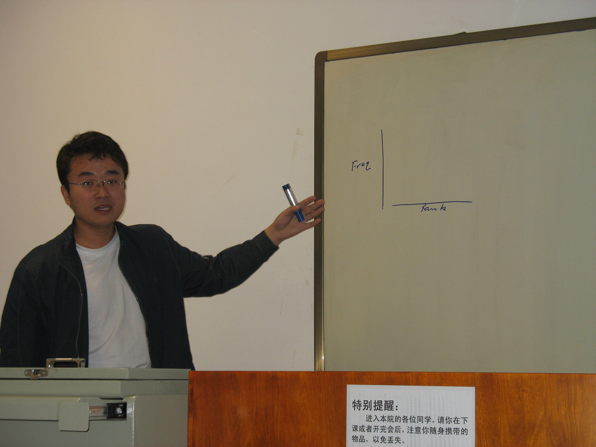

2007年11日周四晚上，我与陈群秀老师、钟涛、杜伟、崔安颀乘坐同一列火车Z11前往武昌车站，开始了武汉的五日之旅。话说中文信息处理国际会议(International Conference on Chinese Computing ICCC 2007)从80年代开始，这届已经是第7届了。
会议从13日开始，15日结束，除了分组论文报告外，开幕式和闭幕式都邀请了一些特邀报告，包括：
日本国家信息研究院Noriko Kando介绍亚洲语言语料库的构建工程，并介绍了在此基础上开展的NTCIR评测workshop的情况。之前也关注过他们的评测比赛，其涵盖的方面非常广泛，我想我们组其实可以通过参加TREC、NTCIR等评测来促进自己科研上的进步。好处是，我们有标准的语料库和测试集，而不需担心资源问题。(http://research.nii.ac.jp/ntcir/outline/prop-en.html)
俞士汶老师的“汉语词汇予以研究及常用词库构建”。上次在大连的会议上见到了董振东先生。感觉像他们老一辈的学者之所以能够在学界产生如此深远的影响，受人尊敬，都是因为他们在某一个领域进行了比较深层次的、方法论上的思辩。例如董振东先生的Hownet以及提出的“义源”的概念；俞士汶先生在词典方面的贡献。这都是我们年轻一辈应当学习的，不仅仅是其思考问题的方法，更重要的学习他们关注问题、探讨问题的层次。
李生老师的“下一代信息检索技术研究”。
萧国政老师的“动词‘打’本义的结构描写及其同义词群建构”。这是偏语言学的思考，对《现代汉语词典》中对“打”字释义的多重标准进行了批评，提出自己的释义方法。
孙茂松老师的“Some Issues in Chinese Text Categorization”。这是主要是李景阳的ACL文章的内容以及孙老师的一些思考。不过现场反应并不热烈。从这次论文集的内容来看，文本分类的相关论文也比较少。有位文本分类相关论文的作者在小组讨论时提到，现在文本分类的相关工作，在ACL等语言学的会议上已经比较少了，而主要集中在机器学习会议上，作为检测新的机器学习方法或特征提取方法的测试平台。
王惠的“基于大规模华语语料库的新加坡常用字词调查”。主要考察了新加坡、香港、台湾、中国大陆的常用词的异同，这种比较还是比较有意思的。不过仅仅停留在比较异同上意义不太大，如果能够探究其背后的规律以及原因，可能会更有意思些。
一天半的分组讨论，感受与在大连的迥乎不同。在大连的会议非常紧凑，而且报告准备的非常认真，而这次凸现出来的问题主要是：(1)报告人缺席情况较多，往往安排六个人的报告，只有一半的人能到。(2)现场比较混乱。由于安排在教室里面，因此比较嘈杂。就我个人的工作，是在博客标签上的一些统计特性的研究。所做的工作比较初步，报告完之后，提问的人并不多。我想接下来是需要静下心来认真完成一项研究的时候了。参会之余，安排了一次长江夜游活动，徜徉长江，夜沐秋风，听着杂乱的奏乐，还是别有一番滋味，有点老上海的纸醉金迷的味道了。总体来讲，此次与会的收获并不是特别大，这是真实的感受，所以接下来发奋努力，向更高层次的会议进军！
  
刘知远 于 FIT大楼
2007-10-23